Authoring Techniques for Accessible Office Documents: OpenOffice Writer (v3.4) and LibreOffice Writer (v4.0.4.2)
Quick Reference
- Usage Notes
- Technique 1. Use Accessible Templates
- Technique 2. Specify Document Language
- Technique 3. Provide Text Alternatives for Images and Graphical Objects
- Technique 4. Avoid “Floating” Elements
- Technique 5. Use Headings
- Technique 6. Use Named Styles
- Technique 7. Use Built-In Document Structuring Features
- Technique 8. Create Accessible Charts
- Technique 9. Make Content Easier to See
- Technique 10. Make Content Easier to Understand
- Technique 11. Check Accessibility
- Technique 12. Use Accessibility Features when Saving/Exporting to Other Formats
- Technique 13. Consider Using Accessibility Support Applications/Plugins
- Other Application Features
- Accessibility Help
- References and Resources
- Acknowledgments
Usage Notes
The techniques described in this document apply both to OpenOffice Writer 3.4.0 and LibreOffice 4.0.4.2. There are sometimes minor differences in the toolbars and dialogs between the two office suites, but these differences do not require different instructions.
At the time of testing (July 2013), Writer provides a set of accessibility features that is sufficient to enable the production of accessible digital office documents. An accessibility checking feature is available by installing the AccessODF extension.
This guide is intended to be used for documents that are:
- Intended to be used by people(i.e., not computer code),
- Text-based (i.e., not simply images, although they may contain images),
- Fully printable(i.e., where dynamic features are limited to automatic page numbering, table of contents, etc. and do not include audio, video, or embedded interactivity),
- Self-contained (i.e., without hyperlinks to other documents, unlike web content), and
- Typical of office-style workflows (Reports, letters, memos, budgets, presentations, etc.).
If you are creating forms, web pages, applications, or other dynamic and/or interactive content, these techniques will still be useful to you, but you should also consult the W3C-WAI Web Content Accessibility Guidelines (WCAG 2.0) because these are specifically designed to provide guidance for highly dynamic and/or interactive content.
File Formats
The default file format for Writer is Open Document Text (ODT). In addition, Writer offers many other word processor and web format saving options. Most of these have not been checked for accessibility, but some information and/or instructions are available for the following formats in Technique 12.
Document Conventions
We have tried to formulate these techniques so that they are useful to all authors, regardless of whether they use a mouse. However, for clarity there are several instances where mouse-only language is used. Below are the mouse-only terms and their keyboard alternatives:
- *Right-click: To right-click with the keyboard, select the object using the Shift+Arrow keys and then press either (1) the “Right-Click” key (some keyboard have this to the right of the spacebar) or Shift+F10.
Several techniques refer to the Styles and Formatting dialog. By default, this is a floating dialog but it can also be docked, so it becomes a panel. When the dialog or panel is open, keyboard users can navigate to it using the key F6. The same applies to the Navigator, which can either float over the editing area or be docked next to it.
Disclaimer and Testing Details:
- Following these techniques will increase the accessibility of your documents, but it does not guarantee accessibility to any specific disability groups. In cases where more certainty is required, it is recommended that you test the office documents with end users with disabilities, including screen reader users.
- The application-specific steps and screenshots in this document were created using Writer (ver. 3.4.0, Windows 7, 32 bits, July 2013) while creating an ODT document.
- This document is provided for information purposes only and is neither a recommendation nor a guarantee of results. If errors are found, please report them to: adod-comments@idrc.ocad.ca.
Technique 1. Use Accessible Templates
All office documents start with a template, which can be as simple as a blank standard-sized page or as complex as a nearly complete document with text, graphics and other content. For example, a “Meeting Minutes” template might include headings for information relevant to a business meeting, such as “Actions” above a table with rows to denote time and columns for actions of the meeting. Because templates provide the starting-point for so many documents, accessibility is critical. If you are unsure whether a template is accessible, you should check a sample document produced when the template is used (see Technique 11).
Writer’s default template for new documents is a blank page. The basic installation also includes blank business card and blank label templates. These are all fairly accessible by virtue of being blank. However, you should make the default language of a template unambiguous (see Technique 2).
It is possible to create your own accessible templates from scratch in Writer. As well, you can edit and modify the existing prepackaged templates, ensuring their accessibility as you do so and saving them as a new template.
To create an accessible template
- Create a new document (either blank or from an existing template)
- Ensure that you follow the techniques in this document
- When you are finished you should also check the accessibility of the document (See Accessibility Checking, below)
- Go to menu item: File > Properties
- Use the Title and/or Comments to indicate the accessibility status of the template. Using Title (e.g., “Accessible Memo Template”) will increase the prominence of the accessibility status because this is used in place of the template’s file name. Comments can be used to add more information if necessary (e.g., “This memo template has been checked for accessibility.”).
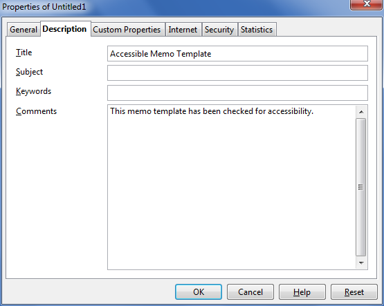 - Close the dialog with OK
- Go to menu item: File > Templates > Save
- In the New Template box, type a name for the template
- Select the category you would like to save it in, under Categories
Note: the category is simply the folder into which you are saving the template
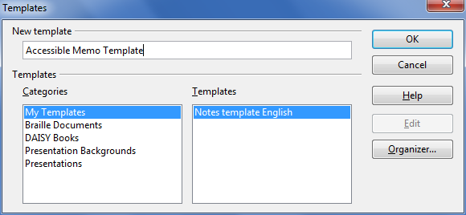 - Close the dialog with OK
To select an accessible template
Only use these steps if you have an accessible template available (e.g. that you previously saved). Otherwise, simply open a new (blank) document.
- Go to menu item: File > New > Templates and Documents
- Select the Templates icon
- Select a template document from the list
Note: A properties pane appears on the right side of the window, where you can read the document properties (Title, By, Date, Modified by, Modified on, Description, and Size). If you placed information about the accessibility of the template in the Title and/or Comments when you created the template (see above), this will be displayed in the Title and/or Description, respectively.
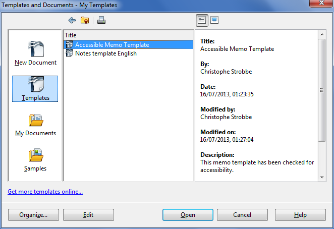 - Select Open
- A new document based on the template will be displayed. If you have chosen an accessible template, the document will be accessible at this point. As you add your content (e.g., text, images, etc.), ensure that you consult the sections that follow to preserve accessibility.
Technique 2. Specify Document Language
In order for assistive technologies (e.g., screen readers) to be able to present your document accurately, it is important to indicate the natural language of the document. If a different natural language is used for a paragraph or selected text, this also needs to be clearly indicated.
To select a language for the whole document
- Go to menu item: Tools > Options
- Select Language Settings > Languages
- Under Default languages for documents, select the document language for all newly created documents.
Note: Writer uses three categories of languages: “Western languages”, “Asian languages” and CTL languages (complex text layout). For monolingual documents in a Western language, you should change the values for Asian languages and CTL languages from their defaults to “None”. Under default languages for documents, enable “Show UI elements for UI elements for East Asian languages” and “Show UI elements for Bi-Directional writing”. Then set the values for Asian and CTL to “None”. You can then again disable the UI elements for these languages again.
Tip: Do this for all your templates. - Close the dialog with OK
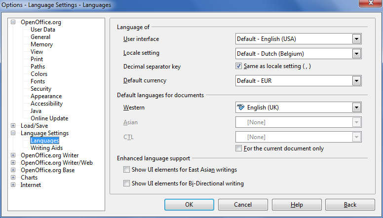
To select a language for a paragraph style
- Place the cursor in the paragraph using the paragraph style you want to edit
- Right-click* and go to menu item: Edit Paragraph Style
- Select the Font tab
- Select the Language and select OK
Note: All paragraphs formatted with the current paragraph style will have the selected language.
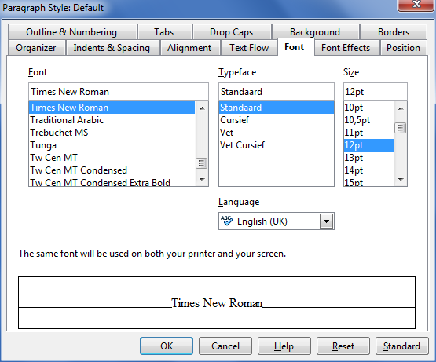
To select a language for hyperlinks
The default language of hyperlinks in Writer is “None”. If all or most hyperlinks in a document are in the same language, you should modify the style for hyperlinks.
- Go to menu item: Format > Styles and Formatting
- In the Styles and Formatting dialog, select the Character Styles icon
- Right-click* on the style Internet Link
- Select Modify...
- Select the Font tab
- Set the language to English (or the Western language that you use most). If the UI for non-Western languages is enabled, set the non-Western languages to “None”.
Tip: Set the language for the style Internet Link in all your templates.
To apply a language directly to selected text
- Select the text to which you want to apply a language
- Go to menu item: Format > Character
- Select the Font tab
- Select the Language
- If the UI for non-Western languages is enabled, set the non-Western languages to “None”.
- Select OK
Technique 3. Provide Text Alternatives for Images and Graphical Objects
Some issues have been observed with Writer involving the loss of alternative text and longer descriptions (e.g., when images anchored to a paragraph are changed to anchor as characters, when a caption is added). We suggest that you guard against this data loss by keeping backups and by setting image anchoring and captions before adding the alternative text.
When using images or other graphical objects, such as charts and graphs, it is important to ensure that the information you intend to convey by the image is also conveyed to people who cannot see the image. This can be accomplished by adding concise alternative text to of each image. If an image is too complicated to concisely describe in the alternative text alone (artwork, flowcharts, etc.), provide a short text alternative and a longer description as well.
Tips for writing alternative text
- Try to answer the question "what information is the image conveying?"
- If the image does not convey any useful information, leave the alternative text blank
- If the image contains meaningful text, ensure all of the text is replicated
- Alternative text should be fairly short, usually a sentence or less and rarely more than two sentences
- If more description is required (e.g., for a chart or graph), provide a short description in the alternative text (e.g., a summary of the trend) and more detail in the long description, see below
- Test by having others review the document with the images replaced by the alternative text
Tips for writing longer descriptions
- Long descriptions should be used when text alternatives (see above) are insufficient to answer the question "what information is the image conveying?"
- In some situations, the information being conveyed will be how an image looks (e.g., an artwork, architectural detail, etc.). In these cases, try to describe the image without making too many of your own assumptions.
- One approach is to imagine you are describing the image to a person over the phone
- Ensure that you still provide concise alternative text to help readers decide if they are interested in the longer description
Alternatively, you can include the same information conveyed by the image within the body of the document, providing the images as an alternate to the text. In that case, you do not have to provide alternate text within the image.
Note: When inserting a new image or object in place of an existing image or object, the alternative text and description will remain the same. This is helpful if you are inserting an updated version of an image, whose meaning and context has not change. However, when inserting an entirely new image or object, you will be required to change the title and description fields accordingly.
Note: When inserting a picture or object that is too large for the height or width of the page, it is best to reduce the size before inserting it into the document. This results in a smaller file size and usually better image quality.
To add alternative text to images and graphical objects
- Right-click* the object
- Go to menu item: Picture
- Select the Options tab in Picture dialog
- Fill in Alternative Text box
Note: the Alternative Text is also the Title of the object
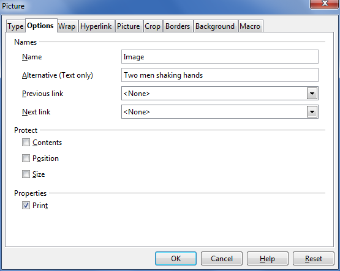
To add long descriptions to images
- Right-click* on object
- Select Description... option
- Enter description in Description box
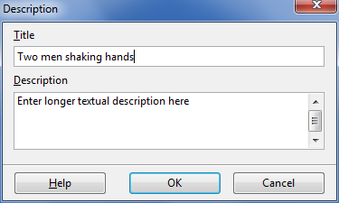
Technique 4. Avoid “Floating” Elements
When images and objects are inserted into Writer documents they default to “floating” with an anchor “To Paragraph”. This makes them difficult to select with the keyboard, so “floating” should be prevented by anchoring them “As Character”.
A “floating” object keeps its position relative to the page, while text flows around it. As content moves up or down on the page, the object stays where it was placed. To ensure that images and objects remain with the text that references it, always position it has attached to a character at the end of the in-text reference.
Similarly, avoid placing drawing objects directly into the document (e.g., as borders, to create a diagram). Instead, create borders with page layout tools and insert complete graphical objects.
To prevent an image or object from “floating”
- Right-click* the object
- Select Anchor > As Character option
Technique 5. Use Headings
Any documents that are longer than a few paragraphs require structuring to make them more straightforward for readers to understand. One of the easiest ways to do this is to use “True Headings” to create logical divisions between paragraphs. True headings are more than just bolded, enlarged, or centered text; they are structural elements that order and levels provide a meaningful sequence to users of assistive technologies.
Tips for headings
- Use the default headings styles provided (“Heading “, “Heading 2”, etc.)
- Nest headings properly (e.g., the sub-headings of a “Heading 1” are “Heading 2”, etc.)
- Do not skip heading levels
To apply headings from the Formatting Toolbar
- Highlight the text that you want to make into a navigational heading
- Select the desired heading from the dropdown list in the Formatting Toolbar
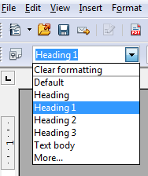
To apply headings using the Styles and Formatting panel
- Highlight the text that you want to make into a navigational heading
- Go to menu item: Format > Styles and Formatting
- Double-click* the desired heading style
Note: If a heading style is modified in the Styles and Formatting panel, the modification will apply to every heading of that style
To apply headings using keyboard shortcuts (up to Heading 5)
- Highlight the text that you want to make into a navigational heading
- Select Ctrl+1 (for Heading 1), Ctrl+2 (for Heading 2), ... Ctrl+5 (for Heading 5)
To modify heading styles
- Go to menu item: Format > Styles and Formatting (F11)
- Select the style to modify from the list
- Right-click* and select: Modify…
- In the Paragraph Style dialog, select the Organizer tab
- In the Name box, enter a unique style name
- Format the heading style using the available formatting options in the various tabs. Make sure your selections align with the techniques in this document.
- Select OK
Technique 6. Use Named Styles
As with “True Headings” (see Technique 5), you should attempt to make use of the named styles that are included with the office application (e.g., “emphasis”, “caption”, etc.) before creating your own styles or using the character formatting tools directly. Named styles help your readers understand why something was formatted in a given way, which is especially helpful when there are multiple reasons for the same formatting (e.g., it is common to use italics for emphasis, Latin terms and species names).
Note: While office application suites support headings in much the same way, the named styles often differ.
Writer provides named “paragraph styles” for “caption”, “endnote”, etc. Styles for strong emphasis, emphasis, source code and quotations are not paragraph styles but “character styles”. You can access character styles by selecting the Character Styles icon in the Styles and Formatting dialog.
To use default named styles
- Default named styles can be applied the same way as headings (see Technique 5).
Technique 7. Use Built-In Document Structuring Features
7.1 Tables
When using tables, it is important to ensure that they are clear and appropriately structured. This helps all users to better understand the information in the table and allows assistive technologies (e.g., screen readers) to provide context so that the information within the table can be conveyed in a meaningful way.
Tips for tables
- Only use tables for tabular information, not for formatting, such as to position columns.
- Use “real tables” rather than text formatted to look like tables using the TAB key or space bar. These will not be recognized by assistive technology.
- Keep tables simple by avoiding merged cells and dividing complex data sets into separate smaller tables, where possible.
- Always set the header to show at the top of each page. Also set the table to break between rows instead of in the middle of rows.
- Create a text summary of the essential table contents. Any abbreviations used should be explained in the summary.
- Table captions or descriptions should answer the question "what is the table's purpose and how is it organized?" (e.g., "A sample order form with separate columns for the item name, price and quantity").
- Table cells should be marked as table headers when they serve as labels to help interpret the other cells in the table.
- Table header cell labels should be concise and clear.
To add a table with headings
- Go to menu item: Insert > Table (Ctrl+F12)
- Enter a name for the table
- Specify the number of columns and rows in the table
- Select the Heading check box
- Select the Repeat heading check box
- Indicate the number of rows you want to use for the heading in The first…rows spinner box
Note: Whenever possible, keep tables simple with just 1 row of headings.
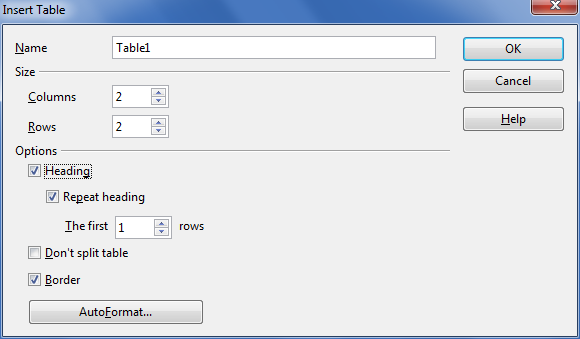
To add table headings manually
- Highlight the table cells that should be headers
- Go to menu item: Format > Styles and Formatting (F11)
- Select the Heading check box and make sure that Repeat heading is checked
To make tables break between rows instead of in the middle of rows
- Place the cursor inside the table
- Go to menu item: Table > Table Properties
- Select the Text Flow tab
- Unselect the check box Allow row to break across pages and columns
- Select OK
7.2. Lists
When you create lists, it is important to format them as “real lists”. Otherwise, assistive technologies will interpret your list as a series of short separate paragraphs instead of a coherent list of related items.
To create an ordered or unordered list
This applies a paragraph style for lists that makes sure that assistive technology and other software can recognise the content as a list.
- Select text
- Go to menu item: Format > Styles and Formatting
- In the Styles and Formatting dialog, select a list style such as List 1 or Numbering 1.
Note: Do not select the style “List”: this style is reserved for modifying all list styles or numbering styles at once.
There are two methods for adding visual list formatting to this list: the first one modifies the applied paragraph style:
- Go to menu item: Format > Styles and Formatting
- Right-click* the paragraph style you applied to the content (e.g., List 1 or Numbering 1)
- Select Modify...
- In the Paragraph Style dialog, select the Outline & Numbering tab
- Select a Numbering Style (this drop-down list also contains styles for unordered lists)
- Select the Indents and Spacing tab
- Set the indent values you would like to use for this list type
- Select OK
The second method changes the visual formatting of a list without changing all lists based on the same style:
- Select the list
- Go to menu item: Format > Bullets and Numbering
- In the Bullets and Numbering dialog, select the Bullets tab for unordered lists or the Numbering type tab for ordered lists
- Select a list style from the Selection gallery
- Select OK
To create sublists
This is the only way to create a true sublist (i.e. a list that is (internally) a child list of the list item above it) instead of a list that is merely indented more from the margin.
- Select the list items that should become a sublist
- On the Bullets and Numbering toolbar, select the button Demote One Level or the button Demote One Level with Subpoints
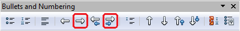
To create new list styles
- Go to menu item: Format > Styles and Formatting
- In the Styles and Formatting dialog, select the List Styles icon
- Right-click* a style from the list
- Select New…
- In the Numbering Style dialog, enter a name for the list style in the Name box
- Format the list using the available formatting options in the various tabs
- Select OK
Note: This does not create new paragraph styles but new formatting styles that you can apply to paragraph styles for lists. Even though the names for the formatting styles (List 1, Numbering 1 etc.) that appear when you select the List Styles icon are the same as some of the paragraph styles that appear when you select the Paragraph Styles icon, their purpose is different: the Paragraph Styles are for document structure and other paragraph features (e.g. indent), the List Styles are for the numbering or bullet style.
7.3 Columns
Use the Columns feature for placing text in columns.
Note: Because columns can be a challenge for users of some assistive technologies, consider whether a column layout is really necessary.
7.4 Page Breaks
Start a new page by inserting a page break instead of repeated hard returns.
To insert a page break, use the shortcut Ctrl + Enter or go to the menu item Format > Manual Break and select Page Break (the default option).
7.5. Use a Table of Contents
Creating an index or table of contents to outline office document content can provide a means of navigating the meaningful sequence of content.
The best way to generate a table of contents is after applying the predefined heading styles, such as "Heading 1" as described above, to the headings that you want to include in your table of contents. After you apply these styles, you can then create a table of contents.
To insert a Table of Contents
- Select in your document where you want to create the table of contents
- Go to menu item: Insert > Indexes and Tables > Indexes and Tables
- Select the Index/Table tab
- Select Table of Contents in the Type dropdown
- Select OK
To use a different paragraph style as a Table of Contents entry
- Select in your document where you want to create the table of contents
- Go to menu item: Insert > Indexes and Tables > Indexes and Tables
- Select the Index/Table tab
- Select Table of Contents in the Type box
- In the Create from area, select the Additional Styles check box
- Select the (...) button next to the check box
- In the Assign Styles dialog, select the style in the list
- Select the >> or the << button to define the outline level for the paragraph style
To update a Table of Contents
- Select Tools > Update > All Indexes and Tables
7.6 Use Page Numbering
Numbering the pages of your document helps those reading and editing your document effectively navigate and reference its content. For users of assistive technologies, it provides a valuable point of reference within the document.
To Insert Page Numbers
- Go to menu item: Insert > Footer
- Select the page style that you want to add the footer to. If you have not created or applied any special page styles, “Default” will be the only option.
- Go to menu item: Insert > Fields > Page Number
Technique 8. Create Accessible Charts
Charts can be used to make data more understandable for some audiences. However, it is important to ensure that your chart is as accessible as possible to all members of your audience.
- All basic accessibility considerations that are applied to the rest of your document must also be applied to your charts and the elements within your charts. For example, use shape and color, rather than color alone, to convey information.
- When creating line charts, use the formatting options to create different types of dotted lines to facilitate legibility for users who are color blind.
- When creating bar charts, it is helpful to apply textures rather than colors to differentiate the bars
- Ensure that the contents are your chart are appropriate labeled to give users reference points that will help them to correctly interpret the information.
- Use the formatting options to change predefined colors, ensuring that they align with sufficient contrast requirements (see Technique 9.2)
- Consider providing the data that you used to create the chart in tabular form (e.g. as an appendix).
To create a chart
- Go to menu item: Insert > Object > Chart…
- Right-click* the chart and select Chart Data Table…
- Update the data table with the data you would like to display
- Close the data table
To add titles and labels
- Select the chart
- Go to menu item: Insert > Titles
- Update the relevant fields and select OK
- Go to menu item: Insert > Data Labels
- Configure your data label selections and select OK
To apply textures to bar charts
- In the chart's legend, right-click* on the Legend Key for one of the bars
- Select Format Data Series...
- In the Fill area, select Hatching and choose one of the textures
- Optionally, select the Background Color check box and choose a color.
- Select OK.
Repeat these steps for each legend key.
To change the line style in line charts
- In the line chart's legend, right-click* on the Legend Key
- Select Format Data Series...
- Select the Line tab
- Choose a line style that will help distinguish the data series from the other lines in the chart
- Select OK
Repeat these steps for each legend key.
Technique 9. Make Content Easier to See
Here are some other things to keep in mind:
9.1 Format of Text
When formatting text, especially when the text is likely to printed, try to:
- Use font sizes between 12 and 18 points for body text.
- Use fonts of normal weight, rather than bold or light weight fonts. If you do choose to use bold fonts for emphasis, use them sparingly.
- Use standard fonts with clear spacing and easily recognized upper and lower case characters. Sans serif fonts (e.g., Verdana, Helvetica, Arial) may sometimes be easier to read than serif fonts (e.g., Times New Roman, Garamond).
Note: Some fonts were specifically designed for easier reading on screens (e.g. the sans-serif fonts Verdana, Trebuchet MS and Calibri, and the serif fonts Georgia, Cambria and Constantia). Unfortunately, many of these fonts are not available across operating systems. - Avoid large amounts of text set all in caps, italic or underlined.
- Use normal or expanded character spacing, rather than condensed spacing.
- Avoid animated (e.g., blinking) text.
But can’t users just zoom in? Office applications do typically include accessibility features such as the ability to magnify documents and support for high contrast modes. However, because printing is an important aspect of many workflows and changing font sizes directly will change documents details such the pagination, the layout of tables, etc., it is best practice to always format text for a reasonable degree of accessibility.
To change the text size for a default named style
- Go to menu item: Format > Styles and Formatting (F11)
- Select the style to modify from the list
- Right-click* and select: Modify…
- Select the Font tab
- Select a font size under Size
- Select OK
9.2 Use Sufficient Contrast
The visual presentation of text and images of text should have a contrast ration of at least 4.5:1. To help you determine the contrast, here are some examples on a white background:
- Very good contrast (Foreground=black, Background=white, Ratio=21:1)
- Acceptable contrast (Foreground=#767676, Background=white, Ratio=4.54:1)
- Unacceptable contrast (Foreground=#AAAAAA, Background=white, Ratio=2.32:1)
Also, always use a single solid color for a text background rather than a pattern.
In order to determine whether the colors in your document have sufficient contrast, you can consult an online contrast checker, such as:
9.3 Avoid Relying on Color or Sensory Characteristics
The instructions provided for understanding and operating content should not rely solely on sensory characteristics such as the color or shape of content elements. Here are two examples:
- Do not track changes by simply changing the color of text you have edited and noting the color. Instead, use Writer’s “Changes” feature to track changes. You can find this feature in the Edit menu.
- Do not distinguish between images by referring to their appearance (e.g. “the bigger one”). Instead, label each image with a figure number and use that for references.
9.4 Avoid Using Images of Text
Before you use an image to control the presentation of text (e.g., to ensure a certain font or color combination), consider whether you can achieve the same result by styling “real text”. If this is not possible, as with logos containing stylized text, make sure to provide alternative text for the image following the techniques noted in Technique 3, above.
Technique 10. Make Content Easier to Understand
10.1 Write Clearly
By taking the time to design your content in a consistent way, it will be easier to access, navigate and interpret for all users:
- Whenever possible, write clearly with short sentences.
- Introduce acronyms and spell out abbreviations.
- Avoid making the document too “busy” by using lots of whitespace and by avoiding too many different colors, fonts and images.
- If content is repeated on multiple pages within a document or within a set of documents (e.g., headings, footings, etc.), it should occur consistently each time it is repeated.
10.2 Provide Context for Hyperlinks
Hyperlinks are more effective navigation aids when the user understands the likely result of following the link. Otherwise, users may have to use trial-and-error to find what they need. To help the user understand the result of selecting a hyperlink, ensure that the link makes sense when read in the context of the text around it.
To add hyperlinks with meaningful text
- Position the cursor where you would like to enter the link
- Go to menu item: Insert > Hyperlinks
- In the Hyperlink dialog, enter the link address in the Target box
- In the Further settings section, enter the text to display in the Text box
- Select Apply
- Select Close
Technique 11. Check Accessibility
If you wish to check the accessibility of your document or template (see Technique 1), download the AccessODF extension and install it using Writer's Extension Manager (Tools > Extension Manager...). This extension offers an “Accessibility Evaluation” function to review your document against a set of possible issues that users with disabilities may experience in your file.
AccessODF classifies issues as either:
- Error: content that makes a file very difficult or impossible for people with disabilities to understand or
- Warning: content that in most, but not all, cases makes a file difficult for people with disabilities to understand.
To Use AccessODF
- Go to menu item: Tools > Accessibility Evaluation...
- An Accessibility Evaluation task panel will open
- Select Check to start the evaluation
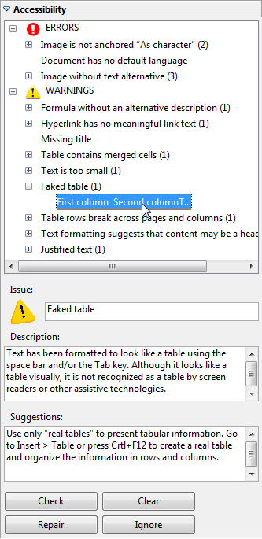 - Select a specific issue to see its description and repair suggestions. If the Repair button becomes active, selecting this button will either repair the issue automatically or open the dialog where you can repair the issue. (For example, adding a text alternative to an image cannot be done automatically, so AccessODF opens the dialog for text alternatives.) If the issue is a false alarm, select the Ignore button.
- When you have repaired all the issues, select the Check button again to find issues that may have gone undetected so far.
More complete instructions are available in the AccessODF User Guide.
Note: Currently, AccessODF 0.1.0 is not compatible with OpenOffice 4.0 (with the new
sidebar) and LibreOffice 4.1 (with or without the sidebar).
Technique 12. Use Accessibility Features when Saving/Exporting to Other Formats
In some cases, additional steps must be taken in order to ensure accessibility information is preserved when saving/exporting to formats other than the default.
PDF documents are not always accessible. Accessible PDF documents are often called “Tagged PDF” because they include “tags” that encode structural information required for accessibility. To evaluate the accessibility of your PDF document, see Technique 11.
- Go to menu item: File > Export as PDF
Note: This option is different than the Adobe PDF option in the Print dialog. - The PDF Options dialog window opens
- Select the General tab
- Select the check box labeled Tagged PDF
Note: You must ensure this option is selected in the PDF Options window dialog box before using PDF icon on menu bar. This option is not checked by default, but will remain checked once you have selected it. - Select the check box labeled Export bookmarks
Note: This creates a hierarchical list of bookmarks that link to the document’s headings. This list is displayed in the bookmarks panel of Adobe Acrobat and Adobe Reader and facilitates navigation (for sighted users) in large documents. - Optionally, select the Initial View tab; in the Panes area, select the radio button Bookmarks and page
- Select Export
- Enter name and save location
- Select Save
HTML (Single HTML File)
- Go to menu item: File > Save As...
- Enter a path and a name for the HTML document
- In the Save as type box, select “HTML Document (OpenOffice.org Writer)” (in OpenOffice.org) or “HTML Document (Writer)” (in LibreOffice).
- Select Save
- A dialog asking which format to choose will appear.
- Select Keep Current Format (in OpenOffice.org) or Use HTML Document (Writer) Format (in LibreOffice)
- Check the HTML files for accessibility (see Technique 11)
HTML (Multiple HTML Files)
- Apply one of the default heading paragraph styles to the paragraphs where you want to generate an HTML page
- Go to menu item: File > Send > Create HTML Document
- Enter a path and a name for the HTML document
- Select Save
- Check the HTML file for accessibility (see Technique 11)
To clean up your HTML file
You may wish to use HTML editors or utilities to help with this process.
- Remove unnecessary styles, line breaks, etc.
- Remove unnecessary id, class, and attributes
- Remove font tags
- Remove styles in the <head> tag
- Ensure the <th> tags have a scope attribute
- Remove <p> tags nested inside <th> and <td> tags
- Check for accessibility (see Technique 11)
Technique 13. Consider Using Accessibility Support Applications/Plugins
Disclaimer: This list is provided for information purposes only. It is not exhaustive and inclusion of an application or plug-in on the list does not constitute a recommendation or guarantee of results.
- odt2daisy – an export as DAISY add-in for OpenOffice.org.
- odt2braille – a Braille extension to OpenOffice.org Writer that enables the printing of documents to a Braille embosser and the export of documents as Braille files.
- OOo2GD – an extension that allows you to export, update and import documents, spreadsheets and presentations between OpenOffice.org applications and Google docs.
Other Application Features
Writer’s “Navigator” Feature
After you have populated your document with content and true headings have been applied, you may wish to rearrange the content. In order to maintain the integrity and accessibility of the altered sequence, you will need to ensure that structural information (e.g., heading levels) is adjusted accordingly.
Writer provides a “Navigator” mechanism which displays all parts of the document, such as headings, tables, frames, objects or hyperlinks. These elements are referred to as “categories”. If a plus sign appears next to any one of the categories, it means there is more than one object of its kind within the document.
The “Navigator” feature helps you navigate document content, as well as access and manipulate the content. This enables you to move headings or subordinate text up or down in a document, as well as promote or demote heading levels. Arranging objects and other elements of the document is possible as well, following the same principle as arranging headings and text. This allows you to apply a meaningful sequence that can be programmatically determined and therefore accessible to assistive technologies.
To open the “Navigator”
- Select the View tab from the menu bar (F5)
- Select the Navigator option
To jump to a location in a document
- Double-click* an item listed in the Navigator window, or enter the respective page number in the spin box
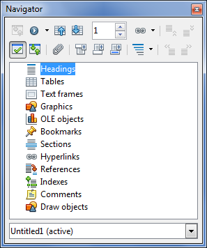
To open a category
- Select the plus sign beside the category
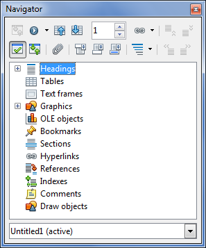
To view only the entries in a certain category
- Select the category and select the Content View icon
Note: Until you select the icon again, only the objects of this category will be displayed
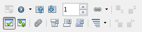
To move heading up or down in a document
- On the Standard Bar, select the Navigator icon to open the Navigator
- On the Navigator, select the Content View icon
- Do one of the following:
- Drag a heading to a new location in the Navigator list
- Select a heading in the Navigator list, and then select the Promote Chapter or Demote Chapter icon
- To move the heading without the subordinate text, hold down Ctrl while you drag or select the Promote Chapter or Demote Chapter icons
To Promote or Demote the Level of a Heading
- Select the heading in the Navigator list
- Select the Promote Level or Demote Level icon
Accessibility Help
If you are interested in what features are provided to make Writer more accessible to users, consult one of the the following:
For OpenOffice Writer:
- Go to menu item: Help > OpenOffice.org Help (F1)
- Enter “accessibility” as the Search Term
For LibreOffice Writer:
References and Resources
- OpenOffice Writer Help
- WebAim: OpenOffice.org and Accessibility [http://webaim.org/techniques/ooo/#writer]
- GAWDS Writing Better Alt Text [http://www.gawds.org/show.php?contentid=28]
- OpenOffice.org 3 Writer Guide
Acknowledgments
Authors: Jan Richards (IDRC), Sabrina Ruplall (IDRC), and Christophe Strobbe (Stuttgart Media University)
This document was produced as part of the Accessible Digital Office Document (ADOD) Project (http://inclusivedesign.ca/accessible-office-documents). This project has been developed by the Inclusive Design Research Centre, OCAD University as part of an EnAbling Change Partnership project with the Government of Ontario and UNESCO (United Nations Educational, Scientific and Cultural Organization).


Accessible Digital Office Documents (ADOD) Project by Inclusive Design Research Centre (IDRC) is licensed under a Creative Commons Attribution-ShareAlike 3.0 Unported License.
Updated: 19 July 2013